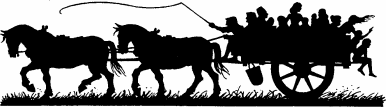

1
A full moon lights the sky above Elzian on the evening you begin your journey to Tahou. Its ashen rays glimmer along the polished wooden outriggers that run the length of the hull of the Skyrider, and illuminate the crystal star ensign and the Sommlending flag as it flutters proudly from the mizzen-mast. The Elders of the High Council have gathered on the roof of their council chamber and, as you and Banedon climb the boarding ladder to the skyship, you pause to return their farewell salute. Bo’sun Nolrim, senior member of Banedon’s crew of dwarves, welcomes you and his captain aboard. Surveying the craft, you notice that the Skyrider has changed very little since you were last aboard her, when you sailed the desert skies of Vassagonia in search of The Book of the Magnakai. The crew remember that voyage fondly and are justly proud of the part they played in the success of that perilous mission. ‘Take the helm, bo’sun, and set a course for Navasari!’ commands Banedon, as he leads you across the busy deck to his cabin at the prow.
Swiftly the lights of Elzian vanish as the Skyrider speeds into the night. A mile below, the jungle of Dessi and the barren peaks of the Xulun Mountains race past beneath the keel, but in the comforting warmth of Banedon’s cabin you feel no sensation of movement; only the hum of the powerful engine indicates how rapidly you are travelling. Over a delicious meal of salt beef and spiced fruit, Banedon explains the purpose of your journey to Navasari, a city that lies over a hundred miles south of Tahou. ‘Our enemies are advancing across Magnamund like a tidal wave, destroying or carrying with them all in their path,’ says the blond-haired magician, pointing to a map of the continent that adorns the cabin wall. ‘Every day a new battle is being fought, and every day we lose another town or village to the Darklords. Before we venture into Tahou we must be sure that the city has not already fallen to Darklord Gnaag, lest we fly straight into a trap. I have many friends in Navasari, reliable friends, friends who are highly placed in the Senate of Anari. From them we will learn if the city still stands, and if it does, how long we can expect it to resist a Darklord assault.’
Mid-morning of the following day, the lookout catches a glimpse of Navasari as the Skyrider emerges from the Yajo Pass. Banedon takes control of the helm and steers the craft towards the east quarter of the city, landing it on the spacious roof of a magnificent, star-shaped building that overlooks the River Chah. A group of dignitaries, resplendent in high-necked robes of green and yellow silk, greet your arrival: these are some of the friends of whom Banedon spoke. Sadly they recount the grim course of events that has recently befallen their country. In the far north, the town of Resa was destroyed and its people massacred by an army of Giaks. Two days later, a similar attack was launched by a Vassagonian army against the town of Zila. They swept along the Anari Pass, burning and looting every village through which they rode, and giving no quarter to those who dared resist them. And three days ago, on the western border, a fierce battle was fought at the Slovian town of Lovka for control of the bridge across the River Churdas. Shortly before midnight the might of Darklord Gnaag’s horde fell upon the beleaguered garrison. They fought bravely, but by the dawn of the following day, all that remained of the town and its defenders were an acre of scorched earth and a cart full of charred bones. The three enemy armies are now advancing towards Tahou. President Toltuda, the head of state, has ordered the evacuation of all women and children from the capital, and has begun strengthening the city’s defences to increase its chances of withstanding the impending siege. When Banedon tells of your intention to go to Tahou, one of his friends offers a few words of caution. ‘It would be unwise to attempt a landing at the capital,’ he warns. ‘Heavy bolt throwers have been positioned on every rooftop and tower in case the city is attacked from the air. The Darklords captured Suentina in such a fashion and the Tahouese have learnt from their neighbour’s misfortune. Skyships rarely visit Tahou, which makes it all the more likely that your craft would be mistaken for a hostile attacker.’
After long deliberation, you and Banedon decide to leave the Skyrider in Navasari and journey to Tahou by horse. Nolrim is left in charge of the craft and crew with instructions to wait here for your return. If Tahou is besieged and he has not received word from you after two weeks, he is to return to Dessi and report that your quest has failed.
{kind=link}

Early next morning, you and Banedon climb into the saddles of two white Anarian steeds provided by his friends, and set off on your two-day ride to Tahou. Less than an hour after leaving Navasari you see a long line of wagons approaching. They are escorted by a troop of cavalry, and each one is crowded with women and children.
If you wish to stop and question these people, turn to 126.
If you wish to ride past them and press on with your journey, turn to 274.